Theory, Philosophy, and Practice
This chapter is Janus-like in that its first – Soft – section is the result of more than 40 years of combined consulting practice in planning and budgeting application implementations; its second – Hard – section advocates for specific technical practices. The Hard complements the Soft; the Soft directs the Hard.
Theory, Philosophy, and Practice
Soft and Hard
In those 40 years, your authors have observed, taken part in, and designed planning applications that performed as promised (or even better), delivered accurate and actionable forecasts, and were a delight to develop, use, and administer. These applications were personally and professionally deeply satisfying efforts that were a credit to all involved: Clients, Planners, and Consultants alike.
We have also borne horrified witness to, and were unwilling participants, in complete and utter planning and budgeting stinkers: poorly designed, badly implemented, and practically useless systems that satisfied exactly no one because they were slow, inaccurate, cumbersome in use, painful to administer, and ultimately rejected by their intended audience. Planning applications like this besmirch reputations, can cause corporations to fail, get application owners fired, boot consultancies out the door, drive Users mad, and make everyone unfortunate enough to be associated with them extraordinarily sad. Sad sucks.
To avoid the suck, we shall list and explain what you – the client (aka normies) or the Consultant (often not terribly normal) – must adopt as your mindset and practice to produce planning applications that are fit for service.
Some of it may seem wise and profound, some of it obvious and trite, and some of it controversial and wrong-headed. Technical implementors naturally focus on the technical aspects of OneStream. However, a technical tour de force that ignores human, project, organizational, and political dynamics is not destined for success.
As noted, some of these dictums will ruffle some professional feathers because of their prescriptive nature. We have made practically every error we can make as Consultants. Experience is a cruel teacher but an effective one, so please think of these principles as the result of that experience, a moderate amount of pain, and much rumination. Ultimately, you as the reader will have to decide their merit; we think you will find them of some value.
Theory, Philosophy, and Practice
The Soft
Theory, Philosophy, and Practice › The Soft
There are No Best Practices, only Good Ones, and even then Not Always
We hear the term “best practices” all the time in sales calls, design meetings, and technical discussions. It makes us, individually and collectively, go absolutely bonkers. Why? It has been our observation, as we flit from project to project, that while there are basic ground rules in OneStream, and practically every other planning technology (e.g., figure out the budgeting, reporting, and analytical needs before you design an application), there is no need to fit the entire world into a single Cube, no matter how well an application is tuned. Bigger Dimensions and more data means slower performance, etc.; specific requirements, not general ones, should drive what and how and why your shiny new OneStream application does what it does.
Theory, Philosophy, and Practice › The Soft › There are No Best Practices, only Good Ones, and even then Not Always
OneStream’s Transformation Rules
An example is where data transformations within OneStream should take place. OneStream’s Data Transformation Rules are used in conjunction with Data Sources to – as the name suggests – transform data so that it may be loaded into a OneStream application. That transformation might take the form of one-to-one mapping or composite mapping or list mapping or range mapping or wildcard mapping or Complex Expressions or Parser Rules. OneStream practitioners instinctively turn to this as the correct and proper (and only) place to perform transformations. It is, after all, right there in the Application pane as provided by the vendor itself. Performing data transformations with Transformation Rules is default practice; it is almost universally viewed as a Best Practice. But, is it?
Theory, Philosophy, and Practice › The Soft › There are No Best Practices, only Good Ones, and even then Not Always
Better at the Source in SQL
A common attribute of large corporations is centrally-defined mapping tables as part of data warehouses. These tables already contain – at a business and IT-defined and approved level – the standard mappings that will be used in all systems. When dimensional or system or business conditions change, the tables are modified to reflect those changes. If the OneStream application does not use those centrally-defined mappings, it will fall out of step with the rest of the business, impacting metadata and data quality. If complex mappings are required, the client will have a deep (and cheap, compared to OneStream resources) and business-aware bench of SQL developers that work with these mapping and transformation tables on a regular basis. If there are thousands of complex mappings across multiple Dimensions, is the transformation process best handled within a relational database via INNER JOINs or in hundreds of pages within a Transformation Rule Editor on a Dimension-by-Dimension basis? Which will perform better and be more cost-effective when the dataset is large: OneStream or a large data warehouse?
Theory, Philosophy, and Practice › The Soft › There are No Best Practices, only Good Ones, and even then Not Always
Which?
Every one of the pro-SQL points can be refuted. OneStream serves a different purpose than a data warehouse and its data transformation needs – in definition and timing – are necessarily different. Internal IT SQL developers are almost certainly completely booked on other projects with a multi-month waitlist. Exporting the mappings to a .trx file and maintaining a large number of mappings in Excel ensures that the Administrator better understands the application’s data. The criticality of performance is largely subjective.
Theory, Philosophy, and Practice › The Soft › There are No Best Practices, only Good Ones, and even then Not Always
Best is Situational. At Best
So, which is better practice: performing data transformations in OneStream or in a relational database?
As Consultants seem to constantly and consistently say, “It depends.” This is because, within the context of the design, implementation, and maintenance of an application, one implementation task amongst many others must be to balance functionality and performance against cost in time and resources. Either is best, depending on the circumstances.
The knowledge that any design is necessarily a compromise between application desires and means is perhaps the only best practice; there are no other best practices, only the best that can be done within the circumstances.
Theory, Philosophy, and Practice › The Soft
A Product this Wide, this Deep, and this Flexible can Never be Fully Mastered – So Don’t
Theory, Philosophy, and Practice › The Soft › A Product this Wide, this Deep, and this Flexible can Never be Fully Mastered – So Don’t
How Big is Big?
For some of us, like your authors and quite possibly you, the notion that a product in its entirety – every bit and bob – cannot be understood and mastered through hard work and a will to learn is by turns both frustrating and dismaying. Other products, more limited in functionality, can often be understood in their entirety by one person. This is not the case with OneStream because it can do so much. How much?
Theory, Philosophy, and Practice › The Soft › A Product this Wide, this Deep, and this Flexible can Never be Fully Mastered – So Don’t
Big, Really Big
Documentation page count is a handy, albeit rough, guide to product functionality. The OneStream
6.5 Design and Reference Guide alone is 1,104 pages. The Studio Report Design Guide for WinForms is 724 pages. There are 10 other design guides plus release notes and an upgrade guide as well as an exhaustive API documentation set. If installation instructions are included, the page count is 3,175 pages.
If we look outside of OneStream’s product documentation, OneStream Press’ OneStream Foundation Handbook, a companion book to this one, is 421 pages. You, Gentle Reader, are holding yet another book in your hand (or are viewing a PDF).
Theory, Philosophy, and Practice › The Soft › A Product this Wide, this Deep, and this Flexible can Never be Fully Mastered – So Don’t
Is it Humanly Possible?
How can any one person understand and comprehend absolutely everything there is to know about any product when the available documentation exceeds 3,500 pages? No one can; not your authors, not you, not anyone. We put it to you that the act of reading this book is proof enough that you, too, need guidance and direction in your journey towards OneStream competence.
Theory, Philosophy, and Practice › The Soft › A Product this Wide, this Deep, and this Flexible can Never be Fully Mastered – So Don’t
Yes, through Specialization
What you (and we) can do is narrow the focus of expertise: go pretty deep and only kind of wide and learn enough (more than enough as all of us, authors and readers alike, are obsessed with doing the very best we can) to do our jobs well. Part of that process is deciding if your area of expertise is Consolidations or Planning. This book is titled “OneStream Planning: The Why, How and When”, so your task of specialization is well on its way.
This book, in spite of its six chapters – a Principles chapter (this one), Core Planning I and II, Planning Without Limits, All Data Points Lead to Reporting and Analysis, and the concluding Specialty Planning Analysis – covers only a portion of the product’s capabilities, cf. the almost 3,600 pages of documentation, but it is the core of OneStream Planning practice.
View this specialization not as a limitation of the product, or one of professional curiosity and ability, but rather a guide to subject selection, study, and – yes – mastery. Your authors are not unique in their ability to learn, understand, and use OneStream to produce Planning and Budgeting systems that not only match but exceed others’ work, whether within OneStream or without. If we can do it, so can you!
Theory, Philosophy, and Practice › The Soft
Over Time, Very Complex Applications Collapse under their Own Weight
Planning applications in OneStream can be complex from a business, functional, and technical perspective, any of which can be a fatal flaw. A complicated Planning application is hazardous to the survival of the organization because the plan it creates is the business’ financial roadmap for the next year or more.
Theory, Philosophy, and Practice › The Soft › Over Time, Very Complex Applications Collapse under their Own Weight
Robustness
Planning applications are used to create a Forecast of future business performance within unpredictable organizational (takeovers, acquisitions), political (contested elections, geopolitical tensions), regulatory (increased environmental statutes, financial standards), and social (widespread protest, cultural shifts) environments. These systems must be flexible and able to pivot from an established forecasting process to a new one when the world around it changes. If process resiliency is defined as an ability to react and adapt to change, the intrinsic inflexibility of complex and intricate systems forbids that ability to adapt, and are thus inherently fragile and not resilient.
Fragile systems break.
Theory, Philosophy, and Practice › The Soft › Over Time, Very Complex Applications Collapse under their Own Weight
Understanding
Moreover, overly complex Planning systems may result in poorly understood predictive outcomes. As an example, a centrally-defined complex multi-step waterfall allocation is well understood by the application’s business owners who, after all, created the functional requirements. However, when such a system is rolled out to Planners at the affiliate level, the Users will either trust the code without understanding the result or – because they do not understand the logic – they mistrust the system. Poorly understood systems are abandoned.
Theory, Philosophy, and Practice › The Soft › Over Time, Very Complex Applications Collapse under their Own Weight
The Human Factor
Theory, Philosophy, and Practice › The Soft › Over Time, Very Complex Applications Collapse under their Own Weight › The Human Factor
Availability and Retention
As an Implementer or Administrator or Owner of a OneStream Planning application, the danger of business and functional complexity is that it drives the technical complexity of the application and thus requires highly skilled individuals. This is not a question of OneStream’s functionality but instead the distribution of practitioner technical skill within the Implementer ability distribution curve. Statistically, there are simply fewer of them than the rest of us, they will be in high demand, and their availability will be therefore limited. In addition, employees whose skill is in high demand are mobile. What happens when the Architect, Developer, or Administrator that is key to a complex project leaves for greener pastures? An Application design that relies on a limited and unstable resource pool cannot be implemented or maintained in the face of unavailability.
Theory, Philosophy, and Practice › The Soft › Over Time, Very Complex Applications Collapse under their Own Weight › The Human Factor
Ability
The last factor to appreciate in complex systems is unique to the implementation phase and is related to the above shortage of very advanced technical skill; if that gifted technical ability is unavailable, less talented practitioners may be unable to implement complex logic and product functionality. This can be partially ameliorated by training and education (hopefully, this book and the other titles published by OneStream Press contribute to those goals) and careful selection of consultancies and their personnel, but the fact remains that projects that cannot find and retain critical resources cannot be implemented.
Theory, Philosophy, and Practice › The Soft › Over Time, Very Complex Applications Collapse under their Own Weight
Collapse
Complex systems are inherently fragile, difficult to understand, challenging to staff, and liable to lose key individuals. Any one of these failure points can be fatal.
Theory, Philosophy, and Practice › The Soft › Over Time, Very Complex Applications Collapse under their Own Weight
Opportunity and Risk
OneStream Consultants often joke, “You can do anything in OneStream.” It is, with very little exaggeration, astonishingly true. The rejoinder to that is, “Yeah, but should you?” Gallows humor aside, the question is an important one to ponder. The temptation to go outside the standard capabilities of the tool is strong because OneStream is an excellent platform for solving complex problems that other products struggle to address.
This extreme ability is where the danger lies. You – Business Owner, Administrator, Consultant alike – must think very carefully about the end state of a complex system. Can it be built on time and on budget? Can it adapt to changing circumstances? Who will maintain it? Does anyone understand it?
Theory, Philosophy, and Practice › The Soft › Over Time, Very Complex Applications Collapse under their Own Weight
Simplicity and Success
A better approach is to consider what would have been lost if a given Planning application was simpler, or if the technical skills required were less extreme, more flexible but slightly more manual, less functional yet well understood, and had well suited and easily identified practitioners.
Resisting complexity and enforcing simplicity is not an easy task because what a system loses in sophistication is front-loaded, whereas the risk of failure from complexity is not.
Avoiding this risk requires constant questioning of process and technical design. Can it be done? Who can do it? Will Planners understand it? What happens when something breaks? Is it within the core functionality of OneStream? None of these are easy questions and the answers entail compromise with attendant project, system, and political risks. Nevertheless, an orientation towards the possible is the most likely to succeed because those systems simply work and keep working.
Ultimately, you will own the success or failure of the Planning application. Eschew complexity when simplicity suffices. Choose wisely.
Theory, Philosophy, and Practice › The Soft › Over Time, Very Complex Applications Collapse under their Own Weight
Not OneStream, but an Example of What Celvin Should Not Do
Whenever I think of complex applications, I think of my home automation. I was without work for a few months because I was in Another Vendor’s declining market and so, with free time staring me in the face, I started automating our new home with my wife’s approval (she knows that I go crazy without a goal and hard work to reach it). I suppose she thought that if my ambition overtook my ability, the house could revert to its old manual – yet fully functional – self.
Little did she know that my cunning plan was to change every single switch in the house, automate the doors, garage openers, and anything else I could devise. Name it, and it was automated.
In the beginning, it was fun. Lights turned off; doors closed whenever we left the house. My favorite feature was lights automatically turning off when motion was not detected after a few minutes. We all got really used to it and liked the new automatic house.
I did put in a few failsafes to prevent Bad Stuff from happening. Then stuff did happen, albeit good at first. But after that, my wife got locked out of the house and our little one was inside. Whoopsie. However, I could remotely open the door for her from hundreds of miles/kilometers away. I guess that was the first time she appreciated my awesomeness at work.
After a while, more bad stuff started happening. We got to enjoy the mesh automation system’s failures (I invite you to dive into the rabbit hole of home automation), the hassle of changing batteries, constant diagnosing of a broken mesh, healing the mesh, and on and on in a series of catastrophes. There were a few instances where I was locked out of my house, during work hours, when my wife left for work and I was outside in the yard. (There were some positive aspects to this. Kind of.) There were instances when the whole house lit up at midnight. You get the idea; there was constant attention needed, and only I could manage it.
Do not let your Planning system be like my automated home, where perpetual attention is needed to keep it running.
I do like the fun of metrics around how many times we opened the doors or how many times the garage door was open at night. It is “amusing” to be alerted when the kids leave the lights on for hours, racking up our electric bill.
Enjoyment aside, my home automation implementation was and is a complex work in progress, albeit a pretty cool one. Coolness, in this case, is fun – despite the added complexity. Coolness is not the goal of a good Planning system. An improved budgeting and forecast outcome should be the only goal of a good Planning system.
Theory, Philosophy, and Practice › The Soft
Everything you Know is (not) Wrong
It has been said by more than one OneStream practitioner, “You have to forget everything you’ve ever learned or done or thought of in that old product. It just holds you back.” This sentiment is wrong because, for someone with knowledge in other tools, it ignores all of the functional Planning system knowledge we (likely) have, and most of the technical and design knowledge we (just as likely) have.
Theory, Philosophy, and Practice › The Soft › Everything you Know is (not) Wrong
Functionally Right
Discounting functional knowledge is wrong: business needs are the same, how those issues are investigated are the same, the process of design is the same, understanding source data and its required transformations are the same, how an allocation works is the same, dimensional design is (largely, but with exceptions noted in this chapter) the same, ad infinitum. To think that your functional knowledge is useless (and that is the implication) smacks of hubris.
Theory, Philosophy, and Practice › The Soft › Everything you Know is (not) Wrong
Technically Questionable
The technical argument is more on point because OneStream – like any performance management product – differs from other products, sometimes dramatically. You must change how you think of what sits in a Cube and what is relational, understand the value of Dimensional Extensibility, embrace VB.Net, delve deeply into OneStream’s object model, use the mandatory Workflow, and comprehend the nuances of the Data Unit, amongst many other technical aspects of the tool.
Notwithstanding these not insubstantial caveats, it has been our observation that understanding and implementing OneStream’s features and functions is more an exercise in studying and experimentation than a complete rejection of prior knowledge.
Theory, Philosophy, and Practice › The Soft › Everything you Know is (not) Wrong
Definitely Doable
As an example of the value of experience, consider an allocation that takes a base number – say distribution costs – that is then spread to products by using product sales as a percentage of the total as a driver.
To perform this allocation, there must be a non-aggregating Distribution Account to spread, there will be a series of non-consolidating Dimension Members that isolate the base amount to prevent double-counting (experience), the logic requires a ratio calculation at a base product against total sales at total product (experience), the products must be passed through or looped (experience), and the result must sit as a normal expense in the Account Dimension P&L(experience). The Finance Business Rule that performs this allocation with GetDataCell calls, DataBuffer loops, and Calculate methods are of course different (new) from the functions and methods in whatever your prior tool supported but are, at their core, the same. While not dismissing the technical effort, how this allocation will be performed is the same as any other tool.
Your experience and knowledge are of value, not of detriment. Your next step is understanding the unique technical nature of OneStream and incorporating its features into your Planning application, a far easier task than starting from Year Zero.
Everything you know is useful.
Theory, Philosophy, and Practice
The Hard
The Soft is a prelude to specific Hard technical practice. How a OneStream practitioner implements a technical feature should be driven by philosophy and mindset as well as technical functionality.
Does this system need a true Consolidation? How much detail is needed from a source file? What is the optimal mix of Excel and OneStream? Does Specialty Planning provide the right kind of analytical functionality?
These design choices do not exist in some sort of untethered-to-reality theoretical space. Instead, they influence and are influenced by those Soft principles such as solution complexity, resourcing, knowledge, and what ultimately are the best possible practices for a given implementation.
Given that this is a book about Planning in OneStream, this section’s technical principles are necessarily viewed through the prism of that practice. Regardless, much of them are equally applicable to Consolidation and Reporting applications. Much of what is advocated reflects new (as of the writing of this book) Planning-specific functionality such as Aggregations and Direct Load that (with little exaggeration) are game-changing and will alter how we all implement Planning in OneStream. Large product improvements make for exciting times, but their novelty means that evaluating their impact within the Soft principles is all the more important.
Theory, Philosophy, and Practice › The Hard
Aggregated, Never (usually) Consolidated
Theory, Philosophy, and Practice › The Hard › Aggregated, Never (usually) Consolidated
The Need for Speed
The pattern of Planners’ data interaction with OneStream is (roughly) as follows: retrieve, review, input, save, calculate, sum to totals, retrieve and then repeat, ending only when the Planning process is complete. The longest system step is typically around summing Entity Parents because the processing of tens of thousands (or hundreds of thousands or more) of Base Dimension data intersections to Parent hierarchy levels takes time to retrieve, compute in memory, and write to disk. Time-consuming or not, the ability to see the impact of inputs and calculations at summed hierarchy levels is key to understanding plan data.
Implementors try to alleviate the time impact by making the Entity Dimension Consolidation process optional at a Form level, or by running it on a scheduled basis. These approaches may improve the User Experience but will delay analysis and may lead to data quality issues when those totals become stale and do not foot to base data.
Theory, Philosophy, and Practice › The Hard › Aggregated, Never (usually) Consolidated
Adding It Up
Happily, the mitigation strategies of scheduled or explicitly delayed processing are required only for the Entity-type Dimension; all other Dimension totals in OneStream are dynamic Aggregations. Entity is a stored hierarchy (largely for the purposes of true accounting-focused Financial Consolidations), and its totals can only be viewed after a Consolidation materializes them. The overhead concomitant with accounting principles and statutory requirements are not typically needed in a Planning application.
The release of OneStream 6.5 removes the need to perform a Consolidation to see data at Entity Parents by providing the option of a simpler Aggregation. Aggregations are fast.
Theory, Philosophy, and Practice › The Hard › Aggregated, Never (usually) Consolidated
What’ll It Do, Mister?
How fast? Using an example of a 17,000-Member Entity Dimension with two years’ worth of data (UD1 through UD6 were also populated), aggregating was seven times faster than consolidating.
| Note: A 17,000-Member Entity Dimension is atypical in its size. A more reasonable Entity Dimension size of 700 saw an 83% improvement in speed. Fast, indeed. Of course, every Cube is different in size, density of data, and design of Dimensions, all of which impact Cube performance; therefore, actual performance in your Cube may vary. |
Theory, Philosophy, and Practice › The Hard › Aggregated, Never (usually) Consolidated
Using It is Simplicity Itself
OneStream 6.5 introduced a new Consolidation Dimension Member: Aggregated.
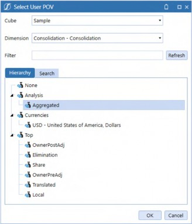
Figure 1.1
Chapter 1
C#Aggregated is – unsurprisingly – where aggregated data sits in the Consolidation Dimension. Launching an Aggregation in a Data Management step is accomplished by using C#Aggregated in the Consolidation Filter instead of the more typical (and default) C#Local. This really and truly is all there is to aggregating instead of consolidating.
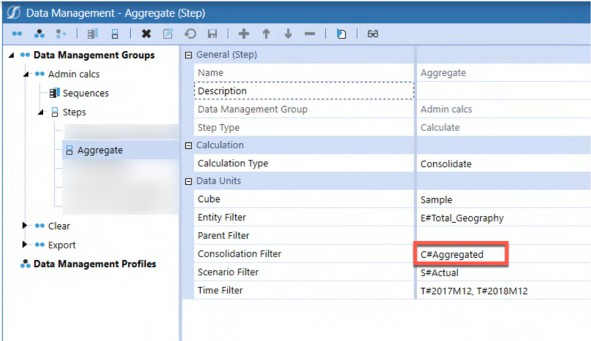
Figure 1.2
Theory, Philosophy, and Practice › The Hard › Aggregated, Never (usually) Consolidated › Using It is Simplicity Itself
C#Aggregated Default Population
Even when an Aggregation is not executed, C#Aggregated is valued at Base Entities but not at Parent-level Members.
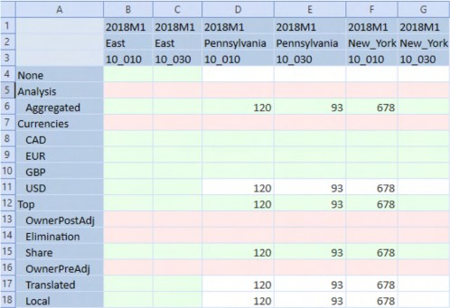
Figure 1.3
An Aggregation returns data at E#East:C#Aggregated but not at C#USD, C#Top, C#Share, C#Translated, or C#Local, all Consolidation artifacts.
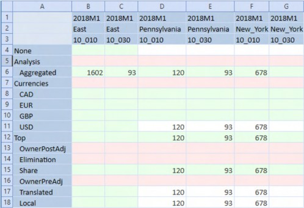
Figure 1.4
A Consolidation will value the typical currency, C#Share, C#Translated, and C#Local data points and will not populate C#Aggregated.
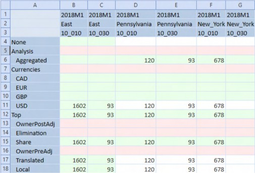
Figure 1.5
Theory, Philosophy, and Practice › The Hard › Aggregated, Never (usually) Consolidated
What’s Kept
Beyond the Aggregation speed improvements, currency conversion, share percentage, and – most importantly – financial intelligence are all retained.
Theory, Philosophy, and Practice › The Hard › Aggregated, Never (usually) Consolidated
What’s Lost
From a Consolidations Application perspective, the following Consolidations-only features are vital and thus preclude Aggregations: Business Rules on all Consolidation levels, recursive calculations on Entity and Consolidation to perform Eliminations, and accounting for Parent Journal Adjustments.
Theory, Philosophy, and Practice › The Hard › Aggregated, Never (usually) Consolidated › What’s Lost
Three Notes
Theory, Philosophy, and Practice › The Hard › Aggregated, Never (usually) Consolidated › What’s Lost › Three Notes
The Good
Aggregations consider already aggregated data values (e.g., if the Entity Pennsylvania’s data changes, impacting the ancestors East and Total Geography, the South Carolina and South hierarchy are not reaggregated).
Theory, Philosophy, and Practice › The Hard › Aggregated, Never (usually) Consolidated › What’s Lost › Three Notes
The Bad
An Entity Dimension can be both aggregated and consolidated. Beyond the needless redundancy in having the same number stored twice in the Cube, the risk that a Consolidation and an Aggregation are not in step is high. Pick one, not the other, and in the case of Planning applications, pick Aggregations.
Theory, Philosophy, and Practice › The Hard › Aggregated, Never (usually) Consolidated › What’s Lost › Three Notes
The Ugly
The C#Aggregated Member automatically reflects level zero Member data and will display Parent-level Member data on Aggregation. However, C#Aggregated is a read-only Member.
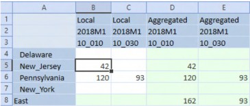
Figure 1.6
A single-month Quick View with nested Consolidation, Time, and UD1 Members poses no navigational issues but would quickly become untenable if expanded to a typical full year of 12 periods, resulting in 48 columns.
There are then two other approaches: separate input and reporting views, or a parameter-driven Consolidation toggle.
Separate Views
This approach creates two Cube Views that differ only in their Consolidation Member selection, i.e., C#Local versus C#Aggregated.
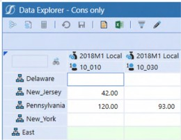
Figure 1.7
The above Cube View allows input but does not show a total at East.
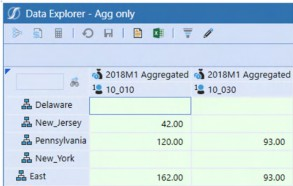
Figure 1.8
A C#Aggregated Cube View shows (after Aggregation) data at the individual state and region level. However, it is read-only.
A Planner could toggle between both Cube Views using Workflow or a custom Dashboard. Beyond the cumbersome nature of changing Cube Views, this approach requires two Cube Views with their follow-on maintenance.
Single Parametrized Consolidation View
A simpler approach is to use a Delimited List parameter to drive the C#Local/C#Aggregated selection and use it in the Column Member definition.
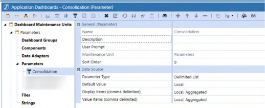
Figure 1.9
Modifying the columns to use the |!Consolidation!| parameter will drive a popup Member selector on Cube View refresh…
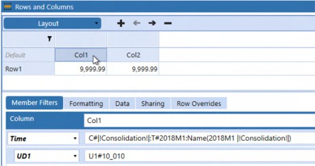
Figure 1.10
…which then allows the User to select C#Aggregated or C#Local.
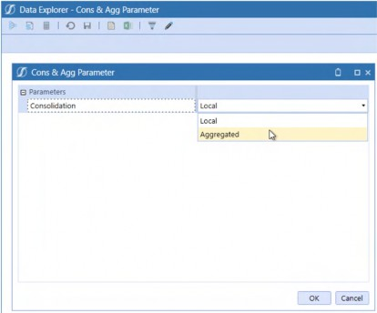
Figure 1.11
This results in a single Cube View that can display either Member.
Choosing Aggregated in the Member dropdown results in a C#Aggregated-valued Cube View that, when aggregated, can be used to view data totaled at East.
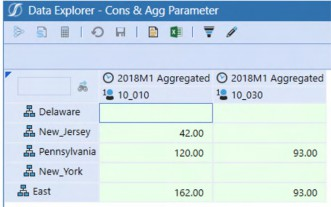
Figure 1.12
Selecting Local in the Member dropdown results in a C#Local-valued Cube View, allowing input at the East’s constituent states.
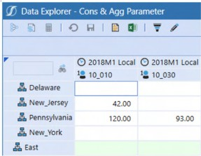
Figure 1.13
Theory, Philosophy, and Practice › The Hard › Aggregated, Never (usually) Consolidated
Reporting
This must surely be the shortest principle in this chapter: Aggregate the Cube and report on
C#Aggregated.
Theory, Philosophy, and Practice › The Hard › Aggregated, Never (usually) Consolidated
Hobson’s Choice
Unless true Consolidation requirements – like elimination – are required in the budgeting process, the performance boost so vital to User Experience means that Aggregation via the Consolidation Dimension’s C#Aggregate should be the only choice for Planning applications.
Theory, Philosophy, and Practice › The Hard
Load Data, Don’t Import It. Sometimes
Prior to OneStream 6.4, data loads for Planning and Consolidation applications used the same method: Import. Import incurs the cost of storing source and target data in Stage tables, a requirement relevant for Consolidations but largely not required for Planning applications.
OneStream 6.4 introduced the Direct Load Workflow Type. Direct Load does not store source and target in Stage but instead performs transformations in memory and writes the result to the target Cube, thus increasing performance. If there is a requirement to understand transformations or to drill back to source data, Direct Load should not be used.
In decades of building planning and analytic applications, your authors have noticed that the actual usage, compared to the stated desirability for drill backs to source, is more honored in the breach than in the observance. Given that lack of use, and the performance increase that Direct Load promises, Planning applications should – with the caveat around losing auditability of transformations – use Direct Load.
Theory, Philosophy, and Practice › The Hard › Load Data, Don’t Import It. Sometimes
Using It
OneStream have made this easy: create a new Workflow Profile using the Direct Default Workflow.
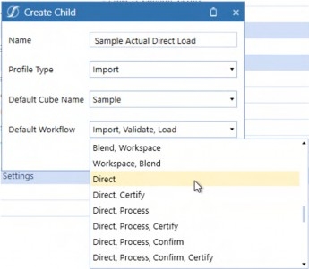
Figure 1.14
Select a Data Source.
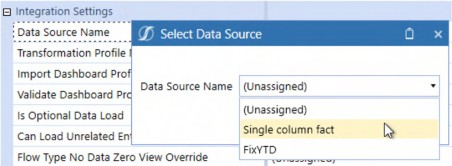
Figure 1.15
Select a Transformation Profile.
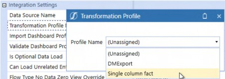
Figure 1.16
Set the Storage Type to Row.
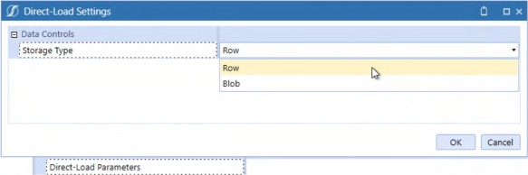
Figure 1.17
After confirming that the Profile Active property is set to True and optionally the Can Load Unrelated Entities property is also set to True, select the Workflow in OnePlace.
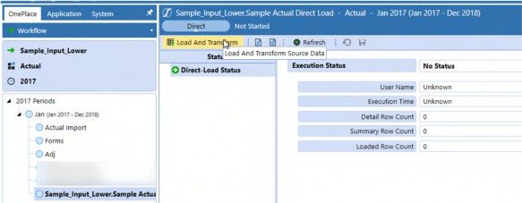
Figure 1.18
As with Import, select the data file. Clicking on the OK button will start the Direct Load process.
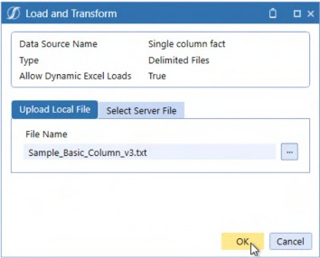
Figure 1.19
The Task Progress dialog box will indicate that Direct Load is being used.
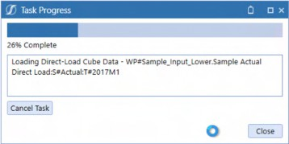
Figure 1.20
When successful, OneStream will show that the process has been completed. Note the Detail, Summary, and Loaded Row counts: Direct Load will aggregate identical file data intersections before loading to the target Cube.
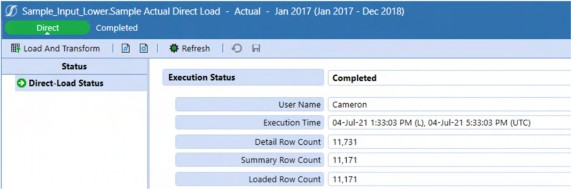
Figure 1.21
Theory, Philosophy, and Practice › The Hard › Load Data, Don’t Import It. Sometimes
How Fast is Fast?
With the caveat that every data source is different, every Cube is different, and every server is different, performance increases up to 50% have been observed by your authors, although a 25% increase in speed seems more typical. That is fast.
Theory, Philosophy, and Practice › The Hard › Load Data, Don’t Import It. Sometimes
Dealing with Errors
Error handling is the same as with Import, with the caveat that the displayed Validation error count cannot exceed 1,000 records. If there are more than 1,000 records, a reload is required to move to the next group of errors.
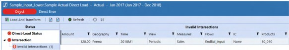
Figure 1.22
| Note: When dealing with any kind of error in data loads, whether Direct Load or Import, correct the data at the source, not during an interactive load process. Performance will be faster, the overall process (including human interaction) will be quicker, and data quality is ensured throughout. Remember, Direct Load does not store transformation history. |
Theory, Philosophy, and Practice › The Hard › Load Data, Don’t Import It. Sometimes
Row versus Binary Large Object (Blob)
Direct Load has two Storage Types: Row and Blob. Observed Blob performance shows little if any difference to Row although it is typically somewhat slower. There is an architectural storage difference (Row stores records in StageSummaryTargetData, Blob is in StageDirectLoadInformation), but this is not observable through Workflow. The typical use case for Blob is when there are rare SQL deadlock issues. Given the infrequency of these errors and the performance boost that Row provides, the latter should be the default choice.
Theory, Philosophy, and Practice › The Hard › Load Data, Don’t Import It. Sometimes
What Happened to the Data?
The below behavior is valid for both Direct Load and Import. This issue occurs so frequently that your authors take this opportunity to illustrate a potentially fatal data quality event and its resolution.
A common data load error occurs when loading more than once to the same Data Unit (this example uses different UD1 Members) which will, by default, clear all other data loaded to that Data Unit whether the Direct Load Method property is set to Replace (the default) or Append.
A typical use case in Planning applications is different Planners loading to the same Data Unit (think of Planners who share responsibility for a single Entity state and UD1 product). If Pennsylvania data is loaded twice, once to UD1 10_010 – Cameron’s 100% Colombian Whole Bean, and then to 10_020 – Celvin’s Colombian Supremo Regular Whole Bean, only the latter will have data. It is an understatement to state that this causes dismay on the part of implementors and Users alike.
Theory, Philosophy, and Practice › The Hard › Load Data, Don’t Import It. Sometimes › What Happened to the Data?
Resolution, but a Clumsy One
One approach would be to combine data for both products into a single data source, but this forbids the business process of a Data Unit with multiple data sources.
Theory, Philosophy, and Practice › The Hard › Load Data, Don’t Import It. Sometimes › What Happened to the Data?
A Much Better Way
The answer instead is twofold: create as many Direct Load Workflow Profiles as required and set their Direct Load Method to Append, ensuring that Planners use “their” Workflow Profile.
Planner 1 loads a 120 to A#Sales:E#Pennsylvania:U1#10_010 using the Direct Row Pa 1st
Profile.
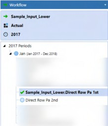
Figure 1.23
Planner 2 loads 93 to A#Sales:E#Pennsylvania:U1#10_020 using the Direct Row Pa 2nd
Profile.
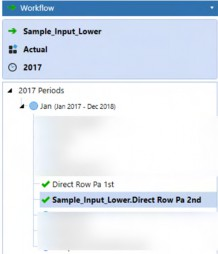
Figure 1.24
The result is that data in both products are successfully loaded to the Cube.
Figure 1.25
Theory, Philosophy, and Practice › The Hard › Load Data, Don’t Import It. Sometimes › What Happened to the Data?
Important Workflow Considerations
Theory, Philosophy, and Practice › The Hard › Load Data, Don’t Import It. Sometimes › What Happened to the Data? › Important Workflow Considerations
Import-only Data Loads
There is a danger to data quality when an Entity (or Entities) are present under multiple Workflow Profiles.
If a data load occurs within the same Entity from more than one Workflow Profile, the last data load wins and is loaded to the Cube. The danger (beyond the danger of miscommunication within a Planning process) is that drilldowns to Stage data will show two sets of source data, only one of which (the last one) was loaded to the Cube.
This is confusing.
Use multiple Import Load Child Workflow Profiles in a single Workflow Profile to ensure that the last loaded data goes to the Cube and is the only data visible in Stage.
Theory, Philosophy, and Practice › The Hard › Load Data, Don’t Import It. Sometimes › What Happened to the Data? › Important Workflow Considerations
Direct Load-Only
Performing Direct Loads in different Workflow Profiles erases the Cube completely and loads to the Cube only what was loaded in the last Workflow Profile used.
This is heart-rending.
Use multiple Direct Load Child Workflow Profiles in a single Workflow Profile to ensure that all other Direct Loads are retained in the Cube. Note, there is no drill through to Stage in Direct Load.
Theory, Philosophy, and Practice › The Hard › Load Data, Don’t Import It. Sometimes
Direct Load Unless You Must Import
Direct Load’s performance impact is significant. Use it in Planning applications unless the unlikely requirement of auditing data loads (this is drilling back to source data before transformations – not needed if the better practice of source transformations is followed) is required. The need for speed is as true for Direct Load as it is for Aggregations.
Theory, Philosophy, and Practice › The Hard
Never use Formulas unless they are Dynamic; use Custom Calculate Wherever and Whenever Possible
Theory, Philosophy, and Practice › The Hard › Never use Formulas unless they are Dynamic; use Custom Calculate Wherever and Whenever Possible
Dynamic Tension
Dynamic Member Formulas are typically lightweight calculations, valid at every (or almost every) Dimension intersection and are, as the name suggests, dynamically calculated on retrieve. They are suitable for reporting and should be used to provide instant feedback. Dynamic formulas are valid in Account, Flow, and all UD Dimensions.
A typical use case is Scenario variances. Within them, instead of simple subtraction, use the BWDiff Method, which flips the variance direction based on financial intelligence. In that context of Actual and Plan, Sales is Actual – Plan, while Distribution is Plan – Actual, reflecting the Account Type.
In this example, the variance is in Member UD8#Act_v_Plan with U8#None as part of the left and right Member tuple. This explicit Member reference prevents recursive calculation in the Member Formula.
Return api.Data.GetDataCell("BWDiff(S#Actual:U8#None, S#Plan:U8#None)")
The result is as expected, with the direction of the variances flipped on Sales (Revenue) and Distribution (Expense): Actual sales is $3,175 lower than Plan – a bad thing – and Actual Distribution costs were less than Plan – a good thing. BWDiff intelligently calculates the variance without complex Account Type tests to flip the variance direction. Use BWDiff and BWPercent to correct directional variances and percent variances.
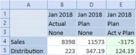
Figure 1.26
Use Dynamic Formulas whenever KPIs, variances, and other immediate calculations are needed.
Theory, Philosophy, and Practice › The Hard › Never use Formulas unless they are Dynamic; use Custom Calculate Wherever and Whenever Possible
Formula
OneStream’s genesis was as a Consolidations tool. True financial reporting requires a full calculation of all possible data points, every time data is changed, performed through Member Formulas and Finance Business Rules attached to the Cube. OneStream calculates these stored calculations through the Data Unit Calculation Sequence (DUCS). See the Design and Reference Guide for more information but you can – largely – ignore attached rules and stored formulas because Planning applications do not require global recalculation.
Theory, Philosophy, and Practice › The Hard › Never use Formulas unless they are Dynamic; use Custom Calculate Wherever and Whenever Possible
Splendid Isolation
The concept is simple: within a Planning application, calculations in one Entity do not require the same calculation in other Entities.
An example with a US state Entity Dimension. Celvin is responsible for the Palmetto State, South Carolina; Cameron is the Planner for the Keystone State, Pennsylvania. Cameron’s loads, inputs, and calculations in Pennsylvania do not affect South Carolina; the obverse is true for South Carolina. The two states’ data only intersect at Total US, assuming Pennsylvania is a Child of East and South Carolina is a Child of South.
If calculation scope is limited by Entity, then there is no need to calculate anything other than the Entity in question. Formulas (or Business Rules) that are tied to the Consolidation process will run for all Entities. This redundancy will not result in incorrect results but does incur a needless performance penalty.
Theory, Philosophy, and Practice › The Hard › Never use Formulas unless they are Dynamic; use Custom Calculate Wherever and Whenever Possible
Less is More
Planning application design must always consider the Planner User Experience, which should be as performant as possible because of its repetitive and highly interactive nature. Scope reduction, along with code efficiency, is the surest path to faster performance. A parameter-driven Custom Calculate Finance Business Rule is the path to fast calculations.
Theory, Philosophy, and Practice › The Hard › Never use Formulas unless they are Dynamic; use Custom Calculate Wherever and Whenever Possible › Less is More
Use Case
The Distribution expense is a fixed percent by month for all states and all products. The functional calculation is sales for all products * a distribution rate at a no geography, no product intersection.
More specifically, within the Finance Business Rule, A#Distribution is calculated by multiplying A#Sales at a given Entity/state and UD1/Product by A#Distribution_Rate at E#No_Geography:UD1#No_Product. Note that Sales for both E#Pennsylvania and E#South_Carolina are valued in the below Quick View.
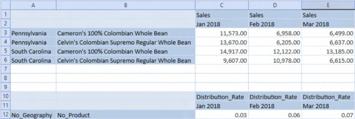
Figure 1.27
Theory, Philosophy, and Practice › The Hard › Never use Formulas unless they are Dynamic; use Custom Calculate Wherever and Whenever Possible › Less is More
Code
All api.Data.Calculate Methods that use a Durable setting of True should have an api.data.ClearCalculatedData statement to ensure that Null intersections from prior calculation runs are fully cleared.
api.data.ClearCalculatedData("A#Distribution:O#Forms", True, True, True, True)
Note: Member formulas can use a Durable flag of True and when that is used, the data in fact is durable on Consolidation, and thus requires explicit clearing. If the Scenario setting of Clear Calculated Data During Calc is set to False, the calculated result behaves as if it is Durable, even when that property is not used in api.Data.Calculate. |
A#Distribution is calculated using the MultiplyUnbalanced Method to accommodate the unbalanced E#No_Geography:U1#No_Product rate tuple. U1#Total_Products.Base sets the scope of the UD1#Product Dimension to all Members.
api.Data.Calculate("A#Distribution:O#Forms:V#Periodic = MultiplyUnbalanced(A#Sales:O#BeforeAdj:V#Periodic, A#Distribution_Rate:O#BeforeAdj:V#Periodic:E#No_Geography:U1#No_Produc t, E#No_Geography:U1#No_Product)",,"F#EndBal_Input",,"I#None","U1#Total_P roducts.Base",,,,,,,,,,True)There must be some excessive level of comments to code when it comes to understanding Business Rules, but your authors have yet to see it. Comment your code to help yourself and others.
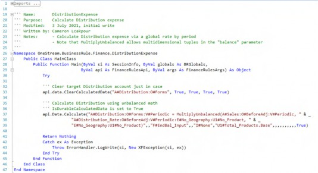
Theory, Philosophy, and Practice › The Hard › Never use Formulas unless they are Dynamic; use Custom Calculate Wherever and Whenever Possible › Less is More › Code
Running the Script
A simple Member Dialog parameter driving Entity to a single, Planner-selected state, as part of a Custom Calculate Data Management step, is the foundation of calculation scope limitation. The below Member Dialog states parameter will be referenced in the Data Management step’s Entity filter as |!E#States!|.
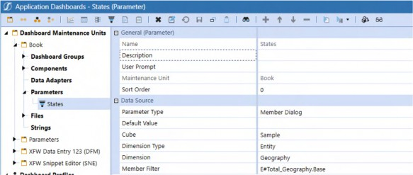
Figure 1.28
When the Data Management Step is executed, a Member dialog box appears, requiring the Planner to select a state.
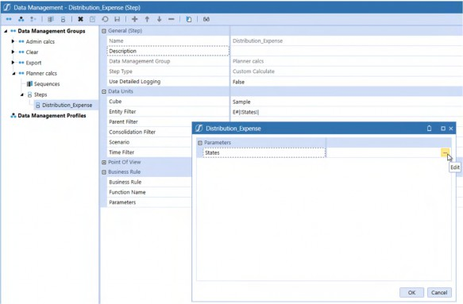
Figure 1.29
By clicking on the ellipsis, the Select Member dialog box appears. When the Planner selects Pennsylvania and then confirms by clicking OK to select the Entity and then OK again to confirm the Entity Member selection, the Data Management step runs the DistributionExpense
Finance Business Rule. The scope of that calculation will be Pennsylvania-only.
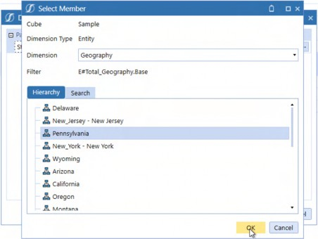
Figure 1.30
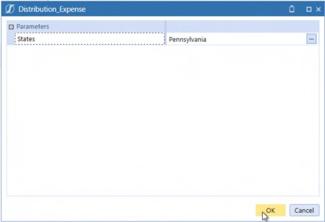
Figure 1.31
Only Pennsylvania is valued.
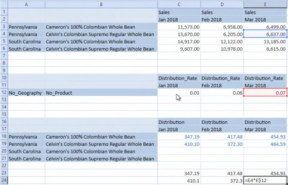
Figure 1.32
Theory, Philosophy, and Practice › The Hard › Never use Formulas unless they are Dynamic; use Custom Calculate Wherever and Whenever Possible
Custom Calculate is the Way
Limiting scope prevents unneeded calculations from occurring, returns results faster to Planners, and can be expanded or restricted to a desired dimensional range as required. The combination of Parameters, Custom Calculate Data Management steps, and Finance Business Rules limits that scope. Use this approach to speed Planning calculations.
Theory, Philosophy, and Practice › The Hard
Extend those Dimensions
When Extensibility was first mentioned in the initial Administrator Level 1 OneStream training, the comic book superhero character “Mr. Fantastic” came immediately to mind. The image of engineer Reed Richards stretching his arms and body to save people in danger works as a metaphor for Extensible dimensionality as that is what “Extensibility” is (the ability to stretch Dimensions and use cases, not the ability to save lives). Extensibility can extend OneStream Planning applications in ways legacy software cannot.
Theory, Philosophy, and Practice › The Hard › Extend those Dimensions
Dimensional Extensibility
A typical candidate for dimensional Extensibility is regional Planning that requires a lower level of Product detail in the Plan Scenario versus the Actual Scenario with the idea being that – in the case of the C&C Coffee Company – processing byproducts are sold onto other manufacturers, thus driving the production plan.
OneStream’s Extensibility seamlessly supports this requirement of differing levels of dimensional detail.
Theory, Philosophy, and Practice › The Hard › Extend those Dimensions › Dimensional Extensibility
UD1 Product
In this example, the UD1 Products Dimension is extended to ByProducts.
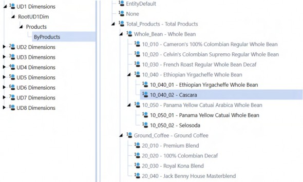
Figure 1.33
Theory, Philosophy, and Practice › The Hard › Extend those Dimensions › Dimensional Extensibility
Extending the Cube
The Actual Scenario is not extended on the UD1 Products Dimension.
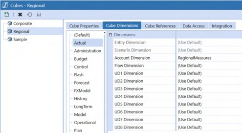
Figure 1.34
The Plan Scenario’s UD1 Dimension is extended to the lower detail level Byproducts Dimension.
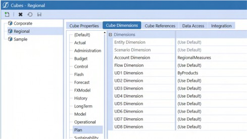
Figure 1.35
Theory, Philosophy, and Practice › The Hard › Extend those Dimensions › Dimensional Extensibility
Extensibility in Practice
The Actual Scenario allows input at the Product level.
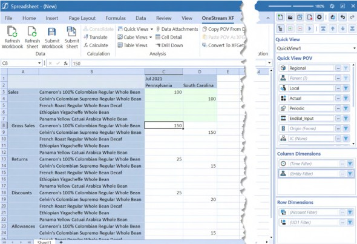
Figure 1.36
The Plan Scenario allows input at the Byproduct level for Ethiopian Whole Bean and Panama Yellow Catuai. The plan’s byproduct detail has been extended below Actual’s products while allowing Aggregation to Actual’s product level.
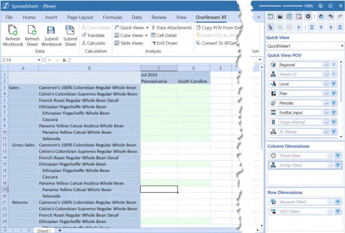
Figure 1.37
Theory, Philosophy, and Practice › The Hard › Extend those Dimensions › Dimensional Extensibility
Extensibility Everywhere
Although this principle discusses Extensible Dimensions, one should not forget that Extensibility is part of the core product philosophy. There are Extensible documents, extended Cubes via Extensible Entity Dimensions, Member properties (aka varying Member properties), and Workflows. Planning applications that take advantage of Extensibility reduce application complexity while increasing flexibility. Its definition is simple, code-free, and powerful. Use it when you can.
Theory, Philosophy, and Practice › The Hard
FP&A Live in Excel. Deal with It
You, Gentle Reader, will and may have already built a wonderful, flexible, highly performant OneStream Planning application that brings together driver-based Planning, the flexibility of Specialty Planning, traffic-lighted Cube Views within Dashboards, and a sophisticated Workflow that drives data loads, input, calculation, and reporting. In short, this application will be, or is, OneStream Done Right, and yet the Planners submit data from Quick Views not Import, Direct Load Row, or Direct Load Blob, perform their reporting in Excel sheets linked to Quick View retrieves or via XFGetCell formulas instead of Reports, and in general spend as much time as possible outside of the OneStream client. What went wrong? Did anything go wrong?
Theory, Philosophy, and Practice › The Hard › FP&A Live in Excel. Deal with It
Excel’s Central Role
Simply put, FP&A’s world revolves around Excel. Irrespective of OneStream’s merits as a Planning and Budgeting tool, Excel is a source and transformer of data, a calculation engine, a database, a reporting tool, and the lingua franca of finance.
If the primacy of Excel is such – and it is – then we must accept that a OneStream application can support, supplement, and drive Excel usage for Planning and Budgeting but never replace it. A OneStream application and its implementation that ignores FP&A’s desires and needs is a failed one.
Theory, Philosophy, and Practice › The Hard › FP&A Live in Excel. Deal with It
Supported, but Arguably Tangential
Static exports of Cube Views to Excel and the incorporation of limited reporting datasets within Office via Extensible Documents are avenues of understanding and distributing OneStream data in Excel but are not the locus of OneStream and Excel – that role is served by the OneStream Excel add-in.
Theory, Philosophy, and Practice › The Hard › FP&A Live in Excel. Deal with It
Missing in Action
The key, then, is to understand what is lost when a Planner goes outside of OneStream, what attracts usage within the OneStream client, and when they must use it because that functionality cannot be replicated within Excel proper.
At the time of writing this book (the fall of 2021), the following OneStream client functions are not supported in Excel:
Asymmetric retrieves
Workflow
Dashboards
Data Management sequences to launch Custom Calculate Business Rules
Table Views
Theory, Philosophy, and Practice › The Hard › FP&A Live in Excel. Deal with It
Mitigating the Missing
Theory, Philosophy, and Practice › The Hard › FP&A Live in Excel. Deal with It › Mitigating the Missing
Asymmetric Retrieves
Asymmetric retrieves are the ability to restrict nested Dimensions to irregular rows and columns. An example is a Q1 Report with Actual months January and February in columns B and C and Plan month March in column D.
Theory, Philosophy, and Practice › The Hard › FP&A Live in Excel. Deal with It › Mitigating the Missing › Asymmetric Retrieves
Ad Hoc
Neither the Excel add-in nor the OneStream Spreadsheet tool support this in ad-hoc mode. A simple solution to this approach is to use Excel’s hide column functionality. OneStream respects the hide function when drilling down/up. In the example below, column D’s Actual March is hidden as are Plan January and February in columns E and F.
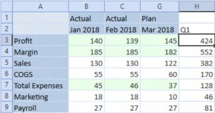
Figure 1.38
Theory, Philosophy, and Practice › The Hard › FP&A Live in Excel. Deal with It › Mitigating the Missing › Asymmetric Retrieves
Cube Views
Cube Views provide asymmetrical column and row functionality through nested Dimension selectors. Cube Views are generally not a User-created OneStream artifact.
Theory, Philosophy, and Practice › The Hard › FP&A Live in Excel. Deal with It › Mitigating the Missing › Asymmetric Retrieves
Doing It in Quick Views
Member Filters in Quick Views (and Cube Views) can create unique Member tuples (data values’ cross-dimensional intersections) using the colon cross-dimensional indicator. Delimited lists of these dimensional selections can be used in a Member Filter. The Time and Scenario Member list…
T#2018M1:S#Actual, T#2018M2:S#Actual, T#2018M3:S#Plan
…in the column Member Filter Builder…
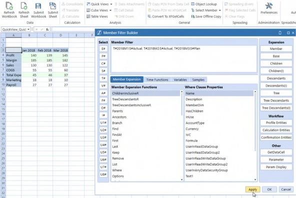
Figure 1.39
…results in an asymmetric retrieve without hidden columns.
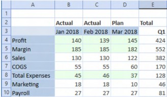
Figure 1.40
Custom Excel-only labels in the second row provide reporting context. Column E is an illustration of the flexibility Excel offers as it is a quarter total of different Scenarios, an analysis not natively available in OneStream.
Theory, Philosophy, and Practice › The Hard › FP&A Live in Excel. Deal with It › Mitigating the Missing
Workflow
Excel ignores Form-level Workflow completion or Workflow locking for both Users and Administrators; only full Workflow Certification will lock data in QuickViews and XFSetCell formulas. One of OneStream's advantages is its control over data; if a Planner or Administrator can go outside of Workflow's restrictions that data quality may be lost.
Here is a Cube View with Complete Form Workflow selected. Within Workflow, all periods are read-only:
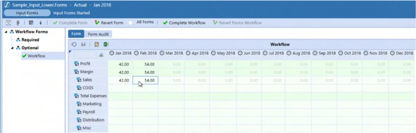
Figure 1.41
All periods are read/write in a Quick View.
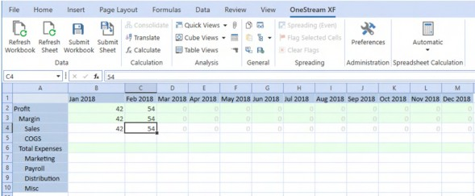
Figure 1.42
Theory, Philosophy, and Practice › The Hard › FP&A Live in Excel. Deal with It › Mitigating the Missing › Workflow
What to Do?
Without full Workflow Certification, Excel (and the OneStream Spreadsheet) ignores Form-level Workflow completion and locking. Given this, the only practical recourse is to design so that Form-based Workflow is irrelevant. Happily, within the context of a Planning application that addresses multiple Time periods (e.g., months within a year, year over year, etc.), closing down input for all Forecast Time periods is not required and, in fact, does not make sense.
However, what is required is preventing access to closed Actual periods. Conditional Input or the No Input Periods Per Workflow Unit property will stop the load, calculation, and input of data in any closed data intersection. In the case of closed periods within a Workflow, these typically take the form of Actual months within a Range Workflow as the sole Method to close periods.
Conditional Input also works within the framework of a monthly Actual Workflow.
See the Strives For Greatness, but Never Quite Makes It and On No Condition sections of the Core Planning II chapter for more information on the pros and cons of Conditional Input and No Input Periods.
Theory, Philosophy, and Practice › The Hard › FP&A Live in Excel. Deal with It
Going Around Excel. Maybe
Excel does not in any way support Data Management sequences, Table Views, Pivot Grids, or Dashboards. If you want to run context-aware (or not) Custom Calculate Business Rules, view or analyze relational data, or surround Forms and Reports with a rich User Interface, the Excel add-in simply does not and cannot support your needs.
Theory, Philosophy, and Practice › The Hard › FP&A Live in Excel. Deal with It › Going Around Excel. Maybe
The Spreadsheet
However, every one of these functions are supported in, or are used by, the Spreadsheet within the OneStream client. While the Spreadsheet is not Excel, it does largely support Excel functionality and reads and writes Excel Workbooks. Form and Report Spreadsheets must reside in a Dashboard no matter how simple, and once a Dashboard is used, Combo boxes, Buttons, and Data Management sequences are available, as are Table Views and Pivot Grids.
The option to bring Excel functionality into a OneStream application provides three potential Excel use cases: exclusion, co-option, and support.
Theory, Philosophy, and Practice › The Hard › FP&A Live in Excel. Deal with It › Going Around Excel. Maybe › The Spreadsheet
Forbidden
A slice of a Consultant’s life. I (Cameron) once had a somewhat surprising conversation with a fellow OneStreamer in a client conference room (to non-Consultants who believe we live and work in the very lap of luxury, this was a conference room turned storage closet for old IT equipment turned, partially, back into a very crowded and uncomfortable conference room) who strenuously said, “Nooooo, we never give Users the OneStream add-in.” He was wrong – the client demanded and got it. Denying FP&A their number one tool is a non-starter.
Theory, Philosophy, and Practice › The Hard › FP&A Live in Excel. Deal with It › Going Around Excel. Maybe › The Spreadsheet
Supplanted
The Spreadsheet’s functionality fully supports a rich OneStream User Experience within a structured framework of providing high data quality (access via Workflow, the correct Members are selected every time, and an automatic refresh of data on opening) input and reporting. Given the oft-times superior performance and customization possible in the Spreadsheet, when compared to traditional Cube Views, one could argue that the Spreadsheet should be the only (or close to the only) User Interface within OneStream.
Benefits aside, the fact remains that the Spreadsheet is not Excel in its flexibility or ability to link to outside data sources. Although we have no insight into OneStream’s product management group, we believe that its use case is as an alternative for structured interaction with OneStream data, but not as a replacement for Excel.
Theory, Philosophy, and Practice › The Hard › FP&A Live in Excel. Deal with It › Going Around Excel. Maybe › The Spreadsheet
Accommodated
If denying the add-in’s existence and replacing Excel entirely via the Spreadsheet are not acceptable approaches in FP&A’s eyes, then the only possible approach is blending the core OneStream client and Excel.
Administrative Dashboards
Perhaps the most keenly felt Excel add-in feature gap is the inability to run Data Management sequences that execute Custom Calculate Finance Business Rules. A failure to run the required rules will inevitably result in incorrect data. As highlighted in the Custom Calculate section of this chapter, the ability to run focused calculations that impact only relevant slices of a OneStream Cube is key to performance.
The answer to calculated data quality issues is to instead create simple administrative Dashboards that allow Planners to quickly select relevant parameterized (the Planner can select Dimension Members as driven by parameters, XFBR Business Rules, or security) Finance Business Rules through simple Dashboard buttons. Once the model of enter and analyze in Excel, and calculate via Dashboards is adopted, Planners enjoy both the flexibility of Excel and the power of OneStream.
Input
If Planners have access to the Excel add-in, they can submit data to a OneStream Cube. There may be edge use cases where perhaps Excel is the only suitable vehicle for input in OneStream, (e.g., Workbooks that contain extensive links to external Workbooks or the incorporation of non-OneStream external data), but as noted these are unusual data requirements, not common.
OneStream Cube Views are robust, dynamic, centrally managed, and tightly controlled data input schedules. They can be directly imported into Excel as live data artifacts. Use them whenever a standard view of data is required.
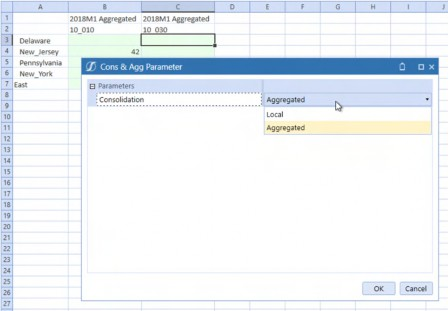
Figure 1.43
An even better practice is incorporating Cube Views into the OneStream Spreadsheet because it melds Excel flexibility, Cube View structure, and Dashboard controls.
This example Dashboard hides the Spreadsheet ribbons, has a Save button, an Aggregate button, and Consolidation dropdown that toggles between Local and Aggregated.
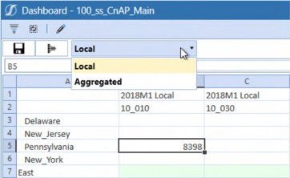
Figure 1.44
While this Dashboard may not be enough to wean Planners wholly away from Excel, it provides an avenue to a more structured data entry path.
Reporting
Reporting is not an either/or situation. OneStream is the source for standard, highly formatted standard Reports; Excel is the home of ad-hoc querying and custom reports. A good practice is to survey Planners on an occasional basis to understand their custom reporting requirements as there may be an opportunity to incorporate those Excel Workbooks as a standard Report for all.
Theory, Philosophy, and Practice › The Hard › FP&A Live in Excel. Deal with It
Having Dealt with It, Move On
Excel must surely be FP&A’s most used software. It will not be abandoned in the face of even the best OneStream implementation there ever was or will be. OneStream is an amazing platform that extends and transforms the forecasting power of FP&A. Neither is in opposition; both are complementary. Incorporating Excel’s flexibility with OneStream’s power is key to Planner adoption and advocacy, as well as the fullest and best use of your OneStream application. Find that balance by supporting your Planners in Excel and in OneStream. FP&A will love you for it.
Theory, Philosophy, and Practice › The Hard
Blend is Not a Cube. Choose Wisely
Analyzing large datasets becomes challenging within a Cube because multidimensional Cube architecture and navigation fails when data and Dimension size becomes very large. Vendors have identified that functionality gap, and – in response – there are many products (open source ones as well) that can consume “Big Data” and produce pretty Dashboards in a matter of seconds. Your authors were fortunate enough to work with an innovative small start-up company whose product’s flexibility, scalability, and User-friendliness just blew our collective geek minds with its awesomeness. The race was on, and as an answer to this, OneStream’s BI Blend was born.
Theory, Philosophy, and Practice › The Hard › Blend is Not a Cube. Choose Wisely
If It’s Not a Cube, Just What is It?
BI Blend is not a Cube. It uses a robust columnar database as its back end, and analysis is performed using Pivot Grids – not OneStream’s Cube interface in the form of Cube Views, Quick Views, XFBooks, and XFGetCell formulas.
BI Blend is not a Cube replacement. It is, instead, a tool to analyze larger volumes of data that cannot be contained within a traditional OneStream Cube. BI Blend supports more dimensionality – 32 in total – to a Cube’s 17.
Theory, Philosophy, and Practice › The Hard › Blend is Not a Cube. Choose Wisely
Pivot Grids are not Meant for Cubes
If your application’s Users expect BI Blend to mimic a traditional Cube User Interface, you must disabuse them of that notion because, while they appear to be the same on the surface, their functionality is different and will be perceived that way by Users.
As a real-world example of failing to educate, we used BI Blend to satisfy a daily Cube snapshot requirement, confident that the flexibility and performance of BI Blend would overcome any differences in functionality. We were overconfident.
Theory, Philosophy, and Practice › The Hard › Blend is Not a Cube. Choose Wisely
Failure, but Whose?
Instead of our prediction of User adoption, the Planners found BI Blend’s Pivot Grids hard to use in the absence of the financial intelligence and the Cube/Quick View User Interface. This was not a product failure but more a compound failure of functional requirements analysis, client expectation setting, and technical implementation. BI Blend was (and is) likely the only reasonable way to get to this scope of data. However, once the introduction was botched, User acceptance was lost.
Theory, Philosophy, and Practice › The Hard › Blend is Not a Cube. Choose Wisely
Ours
At the beginning of this chapter, we noted that we have made every possible mistake a Consultant can make which, alas, is demonstrably not true; this is just the latest. The lesson, then, is to be sure to educate the application owner, Administrators, and Users of BI Blend’s purpose and usage before implementing.
Theory, Philosophy, and Practice › The Hard › Blend is Not a Cube. Choose Wisely
The Choice is Yours
With that caveat, if your Planners want to analyze very large datasets and are comfortable with pivot tables, then BI Blend is your answer.
If you want to perform data slicing and dicing, and have financial intelligence, and in general have something that is not a Cube behave just like a Cube, then it is not.
Choose wisely.
Theory, Philosophy, and Practice › The Hard › Blend is Not a Cube. Choose Wisely
Specialty Planning
Theory, Philosophy, and Practice › The Hard › Blend is Not a Cube. Choose Wisely › Specialty Planning
Relational Artefacts
Specialty Planning is all about SQL tables and views. Whether these tables are in a cloud instance, or on-premise, there are a few naming conventions your application should use.
OneStream’s current naming standard recommendation is to use XFC_ as a table prefix when you create custom Specialty solutions. The prior practice was to use XFW_ as a table prefix for all custom tables, but this leads to confusion with OneStream’s Specialty solutions that are prefixed with XFW_.
Theory, Philosophy, and Practice › The Hard › Blend is Not a Cube. Choose Wisely › Specialty Planning
OneStream Objects
When creating a custom solution (think of Celvin’s MindStream Metadata Manager), it is good practice to use a consistently applied solution name (a three-letter or four-letter word) when naming Dashboard objects, Business Rules, and all other OneStream Components linked to the solution.
If you are terrible at creative naming, then there is a high probability that you will attempt to name (and be prevented from doing) objects with the same nomenclature in many Dashboard units. If the solution name is used as prefix or suffix, you will never run out of names because they help define name uniqueness.
As an example, TDM is a MarketPlace solution that stands for “Table Data Manager” that (unsurprisingly) manages custom tables through a User Interface to create, alter, import, and export data and schemas. Within OneStream, TDM’s objects end with _TDM. TDM’s role will be expanded further in the Specialty Planning Solution vs. a Custom Solution section in Planning Without Limits. If the vendor uses this naming convention to organize OneStream objects, we should as well.
Theory, Philosophy, and Practice
Bringing It All Together
Despite the very first principle’s admonition that there are no best practices, we can at least be sure that there are good practices; this chapter contains many but not all of them.
Despite that incompleteness, the ones listed here – both Soft and Hard – are vital to a OneStream Planning application’s success.
When approaching a Planning application, we practitioners must appreciate that we cannot know everything there is to know about this sophisticated product, that overly complex applications fail (either in their implementation or their maintenance), and that our historical practice knowledge is valuable.
Technical design principles are just as important to application success:
Aggregations and Direct Loads are faster than traditional Consolidations and Imports.
Finance Business Rules executed via Custom Calculate Data Management steps perform quickly, touch less data, and are more flexible than Cube-attached rules or stored formulas.
Dimensional Extensibility should be exploited where possible.
FP&A’s love and use of Excel will never go away.
BI Blend differs from the traditional Cube.
The 10 principles in this chapter are not exhaustive and instead are limited by space and time – your experience will evince other ones as your experience grows. Learn from your mistakes and observations – as your authors have from theirs – and your OneStream Planning applications will thrive. Ignore them at your own peril. Choose wisely. Have fun.